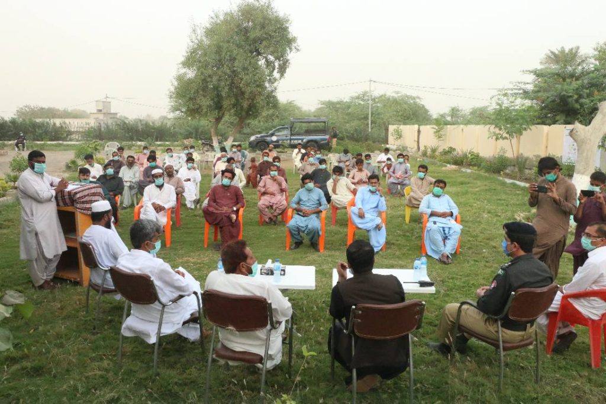
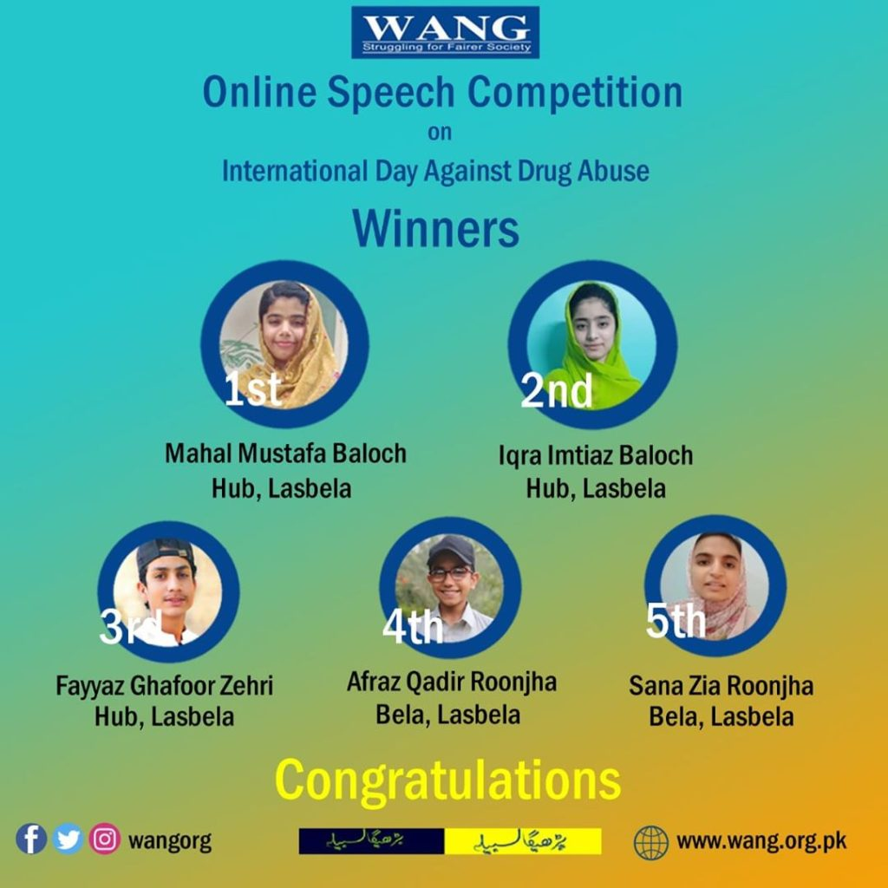
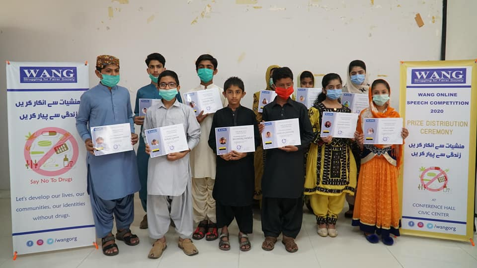

The International Day Against Drug Abuse and Illicit Trafficking, also known as 'World Drug Day', is celebrated annually on 26 June. The theme of World Drug Day 2020 is "Better Knowledge for Better Care."
WANG has been actively campaigning against drug use since it's inception. Our community-led campaigns especially against Gutka have created impactful results in our communities.
On this 26th June WANG celebrated international day against drug abuse by organizing an open public dialogue and online speech competition among children of Lasbela. WANG organized the public dialogue under the topic of " Drug abuse and the responsibility of the community at Bela. The dialogue was held on the 26th of June, different stakeholders from the communities including local administration, journalists, police officials, and youth attend the event. The participants have highlighted the importance of community engagment and sports for youth to avoid drug abuse while demanding strong actions against the drug mafia.

As Coronavirus continues to harm communities, we see children and youth being highly affected by the pandemic. Schools are currently off, parents are tensed of the uncertainty regarding the future of children. As part of our campaign against drug use, WANG organized first-ever of it is a kind an online speech competition among children on the topic of drug abuse.
The competition just did not create an opportunity for children to express their opinion on drug abuse but also became a platform to showcase their talents and public speaking skills. 27 students under the age of 15 participated in the competition from across the Lasbela. Speeches were uploaded on Facebook page and on the bases of opinions of the jury and public voting following students won the positions.

The award distribution ceremony was held at Hub Civic center. Top position holders were recognized with cash prizes and certificates. The Ceremony was attended by the parents, teachers, and community stakeholders of the Hub City.
